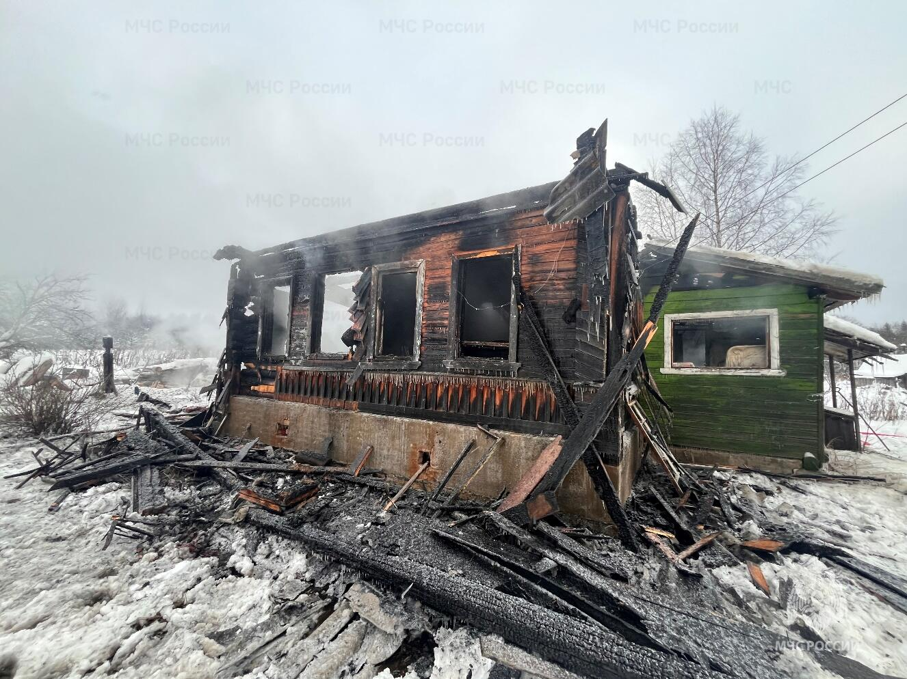
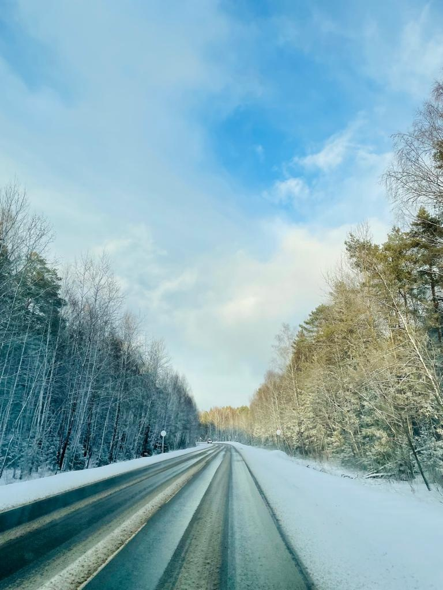
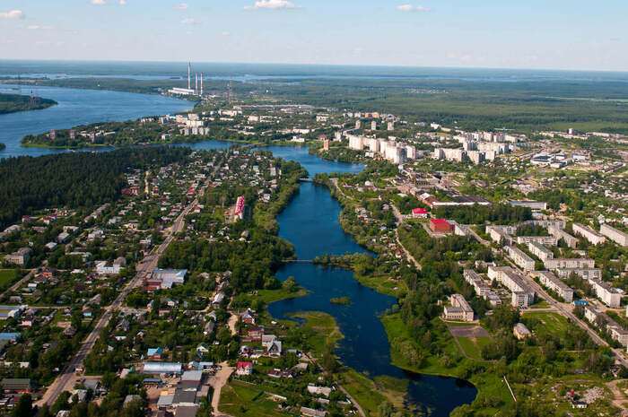

Добро пожаловать в Конаково — город на Волге
Узнать больше
За январь и 10 дней февраля 2026 года на Территории Тверской области произошло 269 пожаров в жилом секторе, на которых погибло 27 человек, получили ожоги 12 человек.
ПодробнееТерритория города Конаково составляет 39,0 кв. км, и на ней проживают 33 560 человек (по данным на 2021 год). Город расположен на берегу Иваньковского водохранилища в устье реки Донховки, в 22 км от федеральной автомагистрали М10. Конаково состоит из двух частей: «старой», в которой в основном располагаются одно- и двухэтажных здания, и «новой». Также в него входят нескольких населенных пунктов – сателлитов и микрорайоны Заборье и Зелёный бор.
В городе Конаково на данный момент активно развивается промышленность, её представляют следующие предприятия:


Красивый вид на город и Волгу.

Энергетический символ города и реки Волги.

Исторический памятник архитектуры.